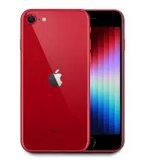
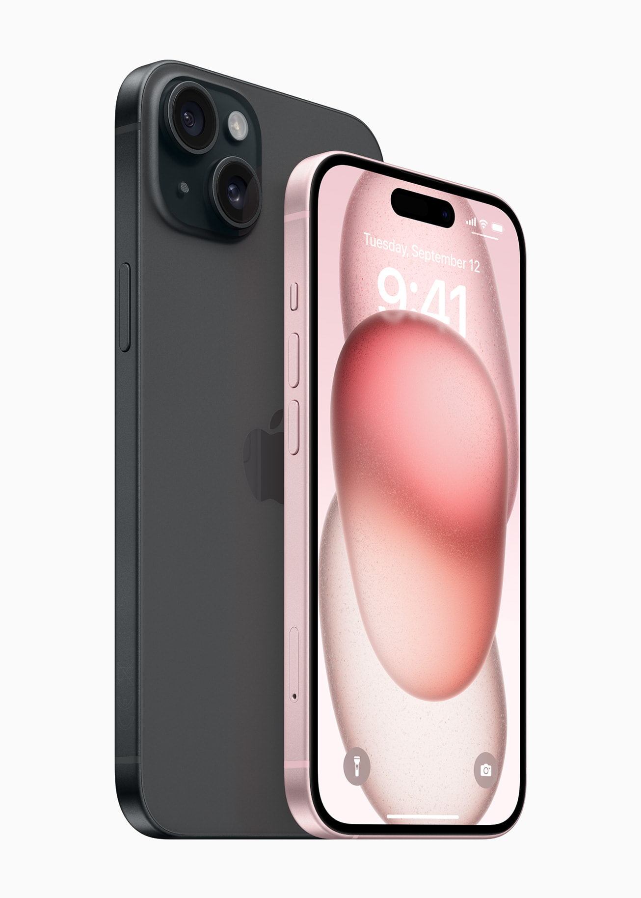
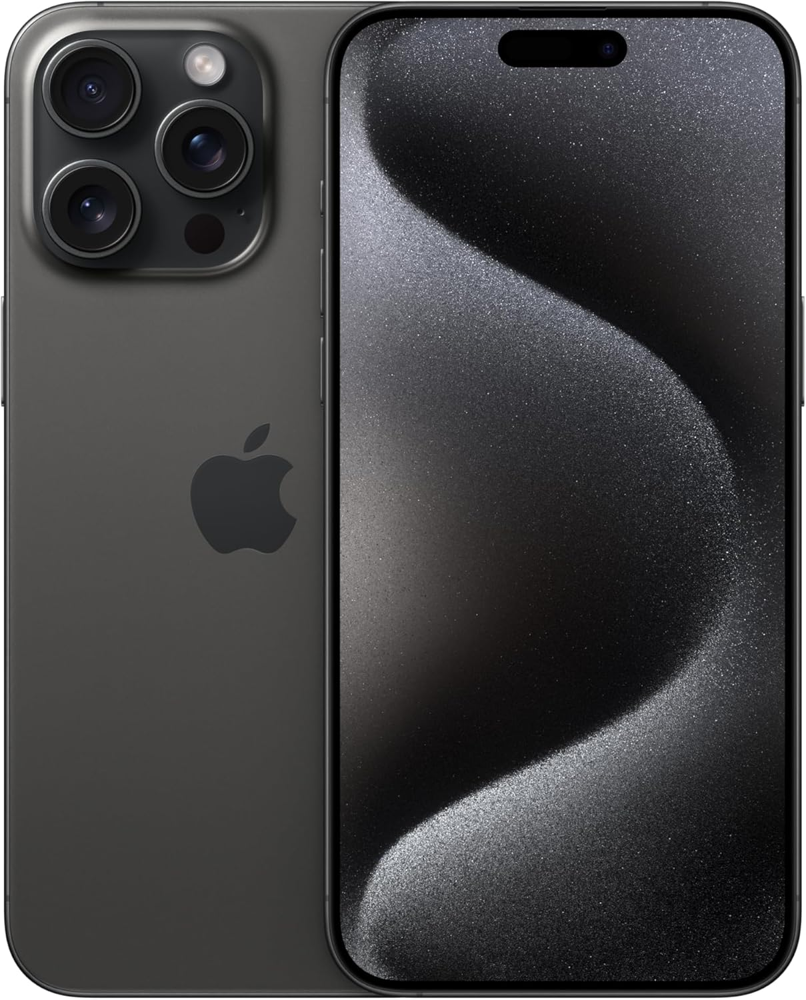

Guía de selección general de iPhone
| Imagen | Gama / Modelo | Uso Recomendado | Pantalla | Cámara | Punto Fuerte |
|---|---|---|---|---|---|
 |
iPhone SE | Presupuesto medido y máxima practicidad | 4.7" Retina HD | Individual (12 MP) | Diseño compacto y chip A-Bionic potente |
 |
iPhone Estándar | Uso diario, redes sociales y fotografía general | 6.1" Super Retina XDR | Doble sistema (48 MP) | Excelente equilibrio entre rendimiento y precio |
 |
iPhone Plus | Multimedia, juegos y productividad en pantalla grande | 6.7" Super Retina XDR | Doble sistema (48 MP) | Pantalla de gran tamaño con peso ligero |
 |
iPhone Pro | Fotografía avanzada, video 4K y multitarea intensa | 6.1" ProMotion (120Hz) | Triple sistema (48 MP) | Cámaras de calidad profesional y construcción de titanio |
 |
iPhone Pro Max | Creadores de contenido, entusiastas y exigencia total | 6.7" ProMotion (120Hz) | Triple sistema con Zoom Óptico 5x | Máximo rendimiento, mayor pantalla y mejor tecnología de cámara |
Principales modelos de celulares iPhone
iPhone 18 Pro y iPhone 18 Pro Max
- Son los modelos más avanzados del catálogo.
- Incluyen cámaras Fusion de 48 MP, con opciones de apertura variable, ultra gran angular y teleobjetivo.
- Ofrecen las mejores pantallas, rendimiento y autonomía dentro de la línea.
iPhone Duo
- También aparece como modelo vigente en las comparativas oficiales.
- Comparte varias funciones de los modelos superiores, incluyendo resistencia mejorada a rayones y Apple Intelligence.
iPhone Air
- Modelo intermedio que combina buen rendimiento con un precio más accesible.
- Incluye cámaras Fusion de 48 MP y compatibilidad con Apple Intelligence.
iPhone 17
- Modelo base de la generación anterior, aún presente en el catálogo oficial.
- Mantiene características modernas como cámaras Fusion y carga rápida.
iPhone 17e
- La opción más accesible dentro de los modelos actuales.
- Conserva funciones clave como Apple Intelligence y buena autonomía.
iPad y Mac
Complementa tu iPhone con la potencia, versatilidad y creatividad de la línea iPad y Mac.
Línea iPad
Tu estudio creativo, libreta digital y pantalla de entretenimiento en un solo dispositivo portátil.
Modelos destacados:
- iPad Estándar: Ideal para estudiantes, navegación y tareas del día a día.
- iPad Air: Diseño delgado y potente con chip de serie M para productividad.
- iPad Pro: Pantalla Ultra Retina XDR y máxima potencia creativa para profesionales.
Línea Mac
Computadoras diseñadas para ofrecer un rendimiento extraordinario con la eficiencia del chip de Apple.
Modelos destacados:
- MacBook Air: La laptop súper ligera con batería para todo el día.
- MacBook Pro: Rendimiento extremo para edición de video 4K, desarrollo y diseño 3D.
- iMac / Mac mini: Potencia de escritorio elegante para tu espacio de trabajo.